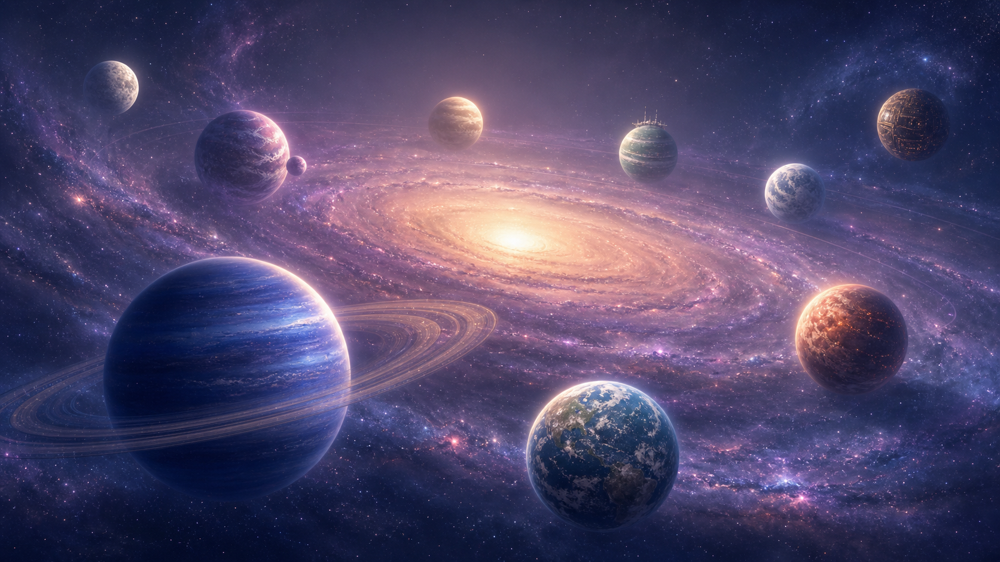

OUR ORBIT
·
我们的轨道
在浩瀚的宇宙中，我们围绕同一个星球，永恒运行。
在一起的第
—
天
☰
OUR UNIVERSE · 9 WORLDS
沿着银河，寻找属于我们的世界
选择一颗星球，在下方打开它的故事。
时间轨道
STORY TRACK
我们的地图
OUR WORLD
回忆房间
MEMORY ROOM
照片星河
PHOTO GALAXY
双人日记
TWIN DIARIES
写给未来
FUTURE LETTERS
恋爱数据
OUR NUMBERS
愿望星座
WISH CONSTELLATION
我们的通讯星
OUR SIGNAL
← 返回宇宙地图
WORLD
新的世界
这颗星球的故事正在展开。